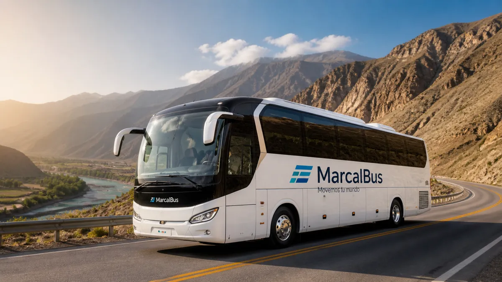

✓
Inicio sin incertidumbre
Puntos de recojo y horarios comunicados de forma clara para que los participantes sepan cómo comenzar.
Una integración, convención o viaje corporativo debería fortalecer al equipo, no convertirse en una lista interminable de pendientes para Recursos Humanos. MarcalBus planifica traslados, recojos y retornos para que los participantes vivan una experiencia cómoda y el encargado del servicio tenga control antes, durante y después.

Organizar una actividad corporativa implica mucho más que elegir un destino. Hay que confirmar asistentes, definir puntos de recojo, coordinar horarios, prever retornos, atender cambios y asegurarse de que nadie quede atrás. Para Recursos Humanos, esa operación puede consumir días de trabajo y continuar incluso cuando el evento ya empezó.
MarcalBus toma esa complejidad y la convierte en un plan de movilidad comprensible. Revisamos el itinerario, calculamos ventanas de salida, proponemos unidades y establecemos un canal de coordinación. Los participantes reciben indicaciones claras; el encargado sabe qué ocurre y a quién contactar.
El objetivo no es solo que el grupo llegue. Es que llegue con buen ánimo, sin estrés y con una experiencia coherente con la inversión que la empresa está haciendo en bienestar, integración o relación con sus clientes.
Puntos de recojo y horarios comunicados de forma clara para que los participantes sepan cómo comenzar.
Unidades modernas, aire acondicionado y asientos reclinables para que el trayecto sea parte de la experiencia.
Planificamos la salida y el retorno para evitar esperas largas cuando termina el evento o la actividad.
Un responsable operativo y una ruta documentada reducen mensajes, cambios duplicados y seguimiento manual.
Evaluamos grupos, destinos, horarios, paradas y posibles cambios para diseñar un servicio realista.
Podemos complementar la experiencia con taxi ejecutivo, minibuses o transporte de personal.
Primero entendemos el objetivo: integración, capacitación, convención, visita, incentivo o bienestar. Después revisamos el número de participantes, origen, destino, itinerario, ventanas de llegada y necesidades especiales. Con eso proponemos la combinación de unidades y horarios que mejor proteja la experiencia.
El GPS permite mantener visibilidad durante la ruta. Las herramientas de IA pueden ayudar a comparar itinerarios, ordenar la demanda y detectar puntos de riesgo logístico. El equipo operativo valida la propuesta y mantiene la comunicación humana, especialmente importante cuando existen cambios de último minuto.
Para RR. HH., el beneficio es tener un plan que puede compartir y consultar. Para los participantes, significa saber qué hacer sin tener que escribir varias veces. Para la empresa, es una forma de cuidar la experiencia que está ofreciendo a su gente.
Cotizar turismo empresarialCuando RR. HH. organiza una actividad, su trabajo no termina en la agenda. También debe cuidar que las personas se sientan consideradas, que la información sea accesible y que el regreso sea tan ordenado como la salida. La movilidad es uno de los primeros y últimos momentos de la experiencia, por lo que puede marcar la percepción completa del evento.
Un proveedor que responde con claridad permite que el equipo de Recursos Humanos esté presente en la actividad en vez de quedarse resolviendo rutas. Puede atender a los participantes, acompañar al liderazgo y observar el resultado que buscaba el evento. Esa liberación de carga tiene un valor operativo y humano.
MarcalBus combina más de 10 años de experiencia, unidades modernas, conductores profesionales y tecnología aplicada a la coordinación. Competimos por calidad, puntualidad, seguridad, experiencia y profesionalismo, no por ser la opción informal de menor precio.
Planificación de rutas, recojos, retornos, unidades cómodas, conductores profesionales y coordinación durante el servicio.
Para integraciones, eventos, convenciones, capacitaciones, visitas, viajes de incentivo y actividades de bienestar.
Reduce la carga de coordinar pasajeros, horarios, puntos de encuentro y retornos, dejando un responsable operativo claro.
Sí. Cubrimos Lima Metropolitana y coordinamos servicios en todo el Perú según la ruta y el proyecto.
Sí. El GPS ayuda a monitorear el recorrido y responder con información durante el viaje.
Ayuda a ordenar itinerarios, analizar demanda, comparar escenarios y anticipar necesidades; las decisiones se validan humanamente.
Sí. Diseñamos ventanas de llegada, puntos de encuentro, retorno y comunicación para el grupo.
Completa el formulario o escribe por WhatsApp con fecha, destino, pasajeros e itinerario.
Cuéntanos el destino, cantidad de pasajeros, itinerario y fecha del servicio.
Hablar por WhatsApp